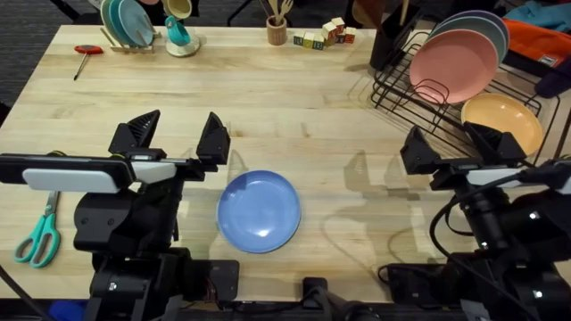

Overview
TL;DR
UniFlow represents 3D as an image, a pointmap of the 3D point (x, y, z) seen at each pixel of the RGB image, so pretrained 2D encoders can encode both without needing a pretrained 3D encoder. It stays robust under scene shifts and, with no robot data pretraining, learns four real tasks from about an hour of demonstrations, beating the large-scale pretrained π0.5 on average.
Abstract
Visuomotor manipulation policies face a persistent trade-off: image-only policies inherit the semantic priors of large-scale 2D pretraining but are brittle to lighting, texture, and viewpoint shift, whereas 3D-only policies are robust to such factors yet are often trained from scratch. Some recent multi-modal policies combine both streams but typically process 3D through a from-scratch encoder, preserving this asymmetry. We present UniFlow, a unified 2D+3D co-training recipe for manipulation in which 3D observations are represented as image-shaped pointmaps (per-pixel 3D coordinates) so that pretrained 2D backbones can be used to encode both modalities, and RGB and pointmap streams are fused by a unified diffusion transformer with per-modality modulation. On average across thirteen dexterous manipulation tasks from the challenging Large Behavior Model (LBM) simulation benchmark, UniFlow outperforms a strong RGB-only baseline in a distribution-shifted setting. UniFlow also outperforms the generalist vision-language-action (VLA) model π0.5 when averaged over five RoboTwin bimanual tasks as well as four real-world tasks on the bimanual YAM platform.
An image of geometry
A pointmap stores, at every pixel, the 3D point that the pixel sees. It has the same shape as the camera image and lines up with it pixel for pixel, so the same kind of pretrained 2D encoder that encodes RGB can encode geometry, with no point sampling or neighbor search. Below, every frame of a real demonstration is a pointmap: drag the divider to compare it with the RGB image, then lift it into 3D.

How it works
RGB and pointmap tokens stay separate streams all the way into a unified diffusion transformer. Each stream keeps its own modulation and feed-forward weights, and all of them meet in one joint self-attention with the noisy action tokens. Hover a block for details.
swipe to explore the diagram →
Pretraining for both streams
Because a pointmap is an image, geometry is encoded by a pretrained 2D encoder just like RGB, not by a point-cloud network trained from scratch. It needs no point sampling or neighbor search, and its tokens sit next to the RGB tokens in the same transformer.
Separate streams, joint attention
MMDiT-Any blocks give every stream its own adaptive layer norm, attention projections and feed-forward network, so RGB and geometry share neither statistics nor weights, while one joint self-attention lets every token see every other.
Few-step actions
Training with ManiFlow's consistency flow-matching objective lets the policy decode an action chunk from noise in a few Euler steps, executed receding-horizon.
Simulation · LBM benchmark
Robust when the scene shifts
Thirteen dexterous tasks from the Large Behavior Model study (Barreiros et al., Science Robotics 2026), seven bimanual and six single-arm, in the Drake simulator. Every policy runs the same seeded scenes in-domain and under a domain shift that adds a second light, swaps the environment map, perturbs camera poses and intrinsics, re-textures objects and table, and in some scenes adds distractors. The LBM baseline is a four-camera variant of that study's RGB-only diffusion policy, trained on the same demonstrations.
Under shift, the RGB-only policy loses more than half of its success. UniFlow, which also encodes geometry, stays close to its in-domain level.
Average success over 13 LBM tasks
In-domain → domain shift
Same scene, four policies
Pick a task and a scene: all four policies start from the same randomized state. Besides LBM and UniFlow, the panel shows UniFlow's two single-modality variants, trained with the pointmap or the RGB stream removed.
All four policies start from the same randomized scene. Videos at 2× speed; outcomes from the benchmark's success checker.
Task by task
The gap is not carried by a few tasks: under shift, UniFlow is ahead of the RGB-only policy on every one of the thirteen.
Per-task success rate
Matched rollouts per task (100 per cell, a few 95–99 after simulator crashes)
One shift at a time
The full shift stacks several perturbations, and a camera-frame pointmap could plausibly be fragile to camera motion. Re-running UniFlow with one axis at a time on the same scenes shows otherwise: no single axis, the camera included, costs it more than a few points. Drag the divider to compare a nominal rollout with a shifted one.
Task
Shift axis
Every single axis stays within a few points of the in-domain average, including camera pose and intrinsics, and the full combined shift is no worse than the weakest single axis.
Simulation · RoboTwin 2.0
One checkpoint, five bimanual tasks
RoboTwin 2.0 randomizes scene appearance, object placement and lighting across rollouts. Each method trains one multi-task checkpoint on 100 demonstrations per task: π0.5 is fine-tuned on them from its large-scale robot data pretraining, while UniFlow has no robot data pretraining, only off-the-shelf pretrained encoders. UniFlow still has the best average, ahead of both the generalist VLA π0.5 and the 3D policy ManiFlow, and it is best of the three on Handover block, Lift pot and, narrowly, Move can pot, which suggests its edge is on tasks that need precise 3D placement.
RoboTwin multi-task success rate (%)
100 rollouts per task · UniFlow and ManiFlow use the head camera, π0.5 the head and both wrist cameras
Real world · bimanual YAM
On a real robot
One multi-task UniFlow policy, trained on 191 teleoperated demonstrations (about an hour) across four rack tasks, against π0.5 fine-tuned on the same data. Apart from its off-the-shelf pretrained encoders, UniFlow has seen no robot data beyond these demonstrations; π0.5 starts from large-scale robot data pretraining. UniFlow reads a ZED 2i head camera and two ZED M wrist cameras, with pointmaps from on-device stereo depth. It reaches a higher average task score than π0.5, and the difference is clearest where geometry matters most: passing a thin plate from one arm to the other.
Plate Handoff · same task, same demonstrations
π0.5 often misses the thin plate edge during the transfer and drops it; UniFlow hands the plate off and racks it.
What makes it work
Two ablations test the idea of treating 3D as an image: the pointmap stream beats point-cloud encoders, pretrained or not, and its 2D pretraining matters, since the same encoder started from random weights does much worse.
Pointmaps beat point-cloud encoders
Only the geometry stream is swapped; the RGB stream, backbone, objective and action head stay fixed. Single-task RoboTwin Lift Pot, 50 demos, 100 rollouts.
2D pretraining transfers to geometry
Same architecture, data and compute; only the initialization of the ConvNeXt V2 pointmap encoder changes. Single-task Put red bell pepper in bin (LBM, in-domain).
An image-shaped 3D input lets the geometry encoder start from pretrained 2D weights; starting the same encoder from random weights costs a large part of the policy's success.
Conclusion
UniFlow represents 3D observations as pointmaps so that pretrained 2D backbones encode both RGB and geometry, and fuses the two streams with per-modality modulation. Across the LBM benchmark it holds its in-domain performance under domain shift, where an RGB-only policy does not, and with no robot data pretraining it outperforms the large-scale pretrained π0.5 on average in RoboTwin and on four real-world bimanual tasks. Treating 3D as an image is a simple way to bring large-scale 2D pretraining to robust multi-modal robot policies.
BibTeX
@inproceedings{yan2026uniflow,
title = {UniFlow: A Unified Multi-Modal Policy for Robot Manipulation},
author = {Yan, Ge and Iwase, Shun and Fan, Yuzhi and Fox, Dieter and Zakharov, Sergey and Liu, Katherine},
booktitle = {Conference on Robot Learning (CoRL)},
year = {2026}
}